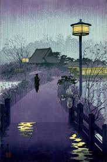

What if man is not really a scoundrel, man in general, I mean, the whole race of mankind-then all the rest is prejudice, simply artificial terrors and there are no barriers and it's all as it should be.

By Osamu Dazai
What if man is not really a scoundrel, man in general, I mean, the whole race of mankind-then all the rest is prejudice, simply artificial terrors and there are no barriers and it's all as it should be.
But you are a great sinner, that's true," he added almost solemnly, and your worst sin is that you have destroyed and betrayed yourself for nothing. Isn't that fearful? Isn't it fearful that you are living in this filth which you loathe so, and at the same time you know yourself (you've only to open your eyes) that you are not helping anyone by it, not saving anyone from anything?.
I have always shook with fright before human beings. Unable as I was to feel the least particle of confidence in my ability to speak and act like a human being, I kept my solitary agonies locked in my breast. I kept my melancholy and my agitation hidden, careful lest any trace should be left exposed. I feigned an innocent optimism; I gradually perfected myself in the role of the farcical eccentric.